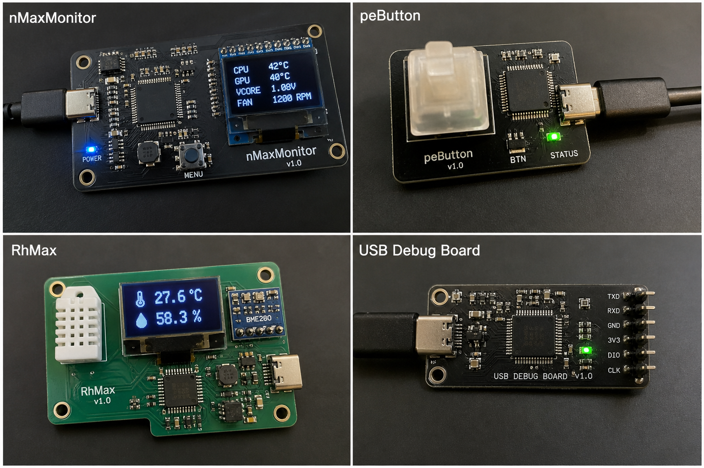

Host by Github Pages
Hi, Ari here, welcome!
I’m really into outdoor stuff like camping, hunting, and hiking. I first got interested in programming back in middle school, and I’ve always loved tinkering with hardware too, things like TV remotes, washing machines, even video game consoles.
Back then, I got scolded a lot by my mom because I kept taking apart stuff around the house just to experiment with it ;)
Software Project :
Hardware Project :

┌───────────────────────────────────────────────┐
│ PC HOST │
│ │
│ ┌───────────────────────────────────────┐ │
│ │ Sensor Software (HWiNFO / Custom) │ │
│ └───────────────┬───────────────────────┘ │
│ │ USB │
└───────────────────┼───────────────────────────┘
│
▼
┌──────────────────────────────┐
│ USB PCB DEVICE │
│ │
│ ┌──────────────────────┐ │
│ │ Microcontroller │ │
│ └───────┬──────────────┘ │
│ │ │
│ ┌───────▼────────┐ │
│ │ OLED Display │ │
│ └────────────────┘ │
│ │
│ RGB LED / Alert System │
└──────────────────────────────┘
┌──────────────┐
│ BUTTON │
└──────┬───────┘
│
▼
┌──────────────┐
│ Microcontrol │
│ (ATmega) │
└──────┬───────┘
│ USB
▼
┌──────────────┐
│ PC Software │
│ (Hotkey / │
│ Macro Tool) │
└──────────────┘
┌──────────────┐
│ Temp Sensor │
└──────┬───────┘
│
┌──────▼───────┐
│ Humidity │
│ Sensor │
└──────┬───────┘
│
▼
┌──────────────┐
│ Microcontrol │
└──────┬───────┘
│
┌──────▼───────┐
│ OLED Display │
└──────────────┘
[PC USB]
│
▼
┌──────────────┐
│ USB Interface│
└──────┬───────┘
▼
┌──────────────┐
│Logic Analyzer│
└──────┬───────┘
▼
┌──────────────┐
│ Debug Output │
│ (LED / UART) │
└──────────────┘
Copyright (c) 2012 - 2026 Ari Sohandri Putra. All Rights Reserved.
Made with Love from East Lombok.